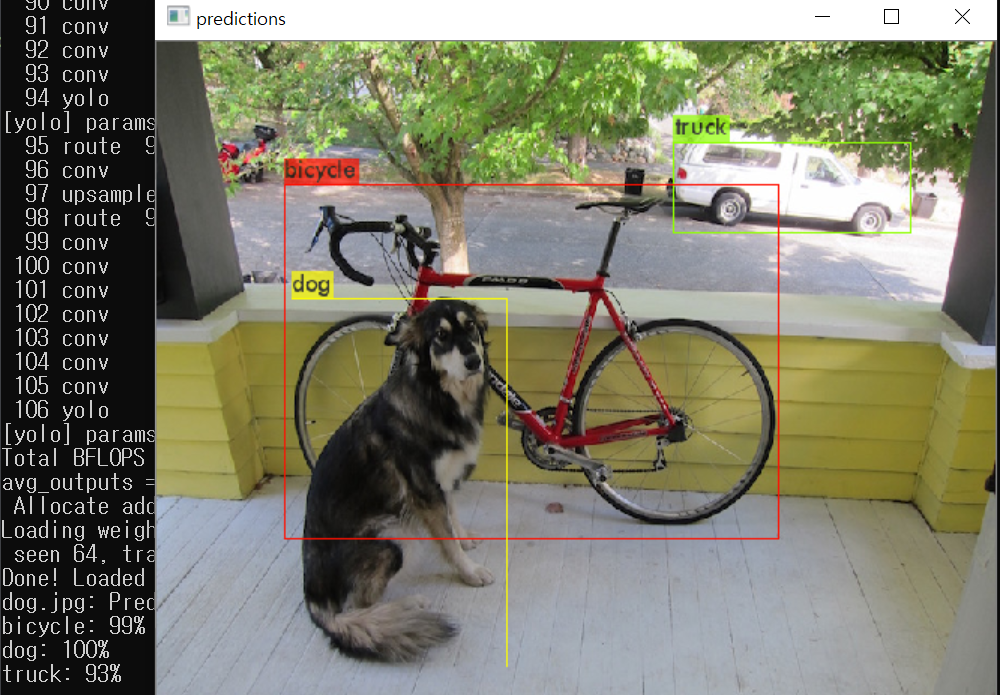

Install
- OS :
Window 10 - GPU :
RTX-2080 Ti - Visual Studio :
Community 2019 - Opencv :
3.4.10 - CUDA :
10.1 - cudnn :
7.65
GPU 버전에 맞게 CUDA와 cudnn을 설치를 하시면 됩니다.
- CUDA : https://developer.nvidia.com/cuda-toolkit-archive
- cudnn : https://developer.nvidia.com/rdp/form/cudnn-download-survey
- 환경변수 등록 !!
CUDA version 확인
nvcc --version
cudnn version 확인
C:\Program Files\NVIDIA GPU Computing Toolkit\CUDA\v10.1\include\cudnn.h
#define CUDNN_MAJOR 7
#define CUDNN_MINOR 6
#define CUDNN_PATCHLEVEL 5
version : 7.65
Visual Studio 설치
Visual Studio 다운로드 -> Community 2019
C++를 사용한 데스크톱 개발 Check
설치
Opencv 설치
3.4.10환경변수 등록 !!
Darknet 설치
git clone https://github.com/AlexeyAB/darknet.git
DarkNet 실행하기
darknet/build/darknet/darknet.sln접속프로젝트->속성2.0
구성 : Releases / 플랫폼 : x642.1
C/C++->일반->추가 포함 디렉터리->opencv 경로 추가 (~\opencv\build\include)2.2
전처리기->전처리기 정의->OPENCV 추가2.3
링커->일반->추가 라이브러리 디렉터리->opencv 경로 추가 (~\opencv\build\x64\vc14\lib)2.4
구성 : Debug / 플랫폼 : x64에도 똑같이 적용
솔루션 탐색기->darknet 우클릭->빌드 종속성->사용자 지정 빌드->CUDA Check~\opencv\build\x64\vc14\bin->opencv_ffmpeg3410_64.dll,opencv_world3410.dll복사 ->~\darknet\build\darknet\x64디렉토리에 붙여넣기ctrl + F5빌드 성공 ^^
문제점 해결
- CUDA 10.1인 경우 처음에 빌드 종속성에서 찾을 수 없습니다.
여기를 참조해 따라하고 빌드 종속성을 CUDA 10.1로 변경하시면 됩니다.
예제 실행
yolov3 weights : https://pjreddie.com/media/files/yolov3.weights
tiny yolov3 weights : https://pjreddie.com/media/files/yolov3-tiny.weights
cd ~/darknet/build/darknet/x64
darknet.exe detector test data/coco.data cfg/yolov3.cfg yolov3.weights -i 0 dog.jpg
